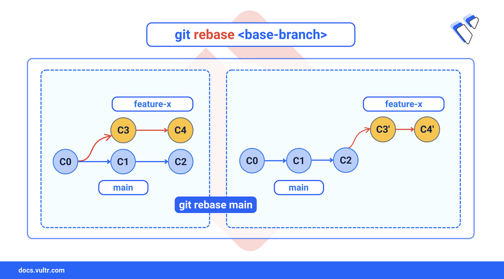
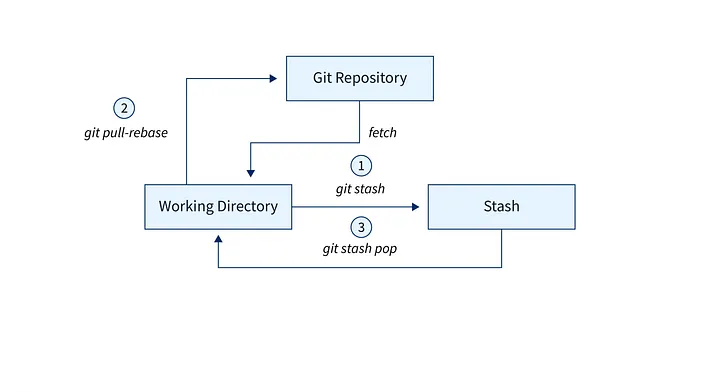

Rebasing
Reapply commits on top of another base tip to maintain a clean history:
git checkout feature-branch
git rebase mainUse git rebase --continue to resolve conflicts during rebase.

Stashing
Temporarily save uncommitted changes so you can work on something else:
git stash
git stash popWorkflows
Choose a workflow that fits your team:
- Feature Branch Workflow – Each feature has its own branch.
- Gitflow Workflow – Structured branches like develop, release, and hotfix.
- Forking Workflow – Contributors fork, push, and make pull requests.
CI/CD Integration
Automate testing, building, and deployment pipelines with GitHub Actions, GitLab CI, or other CI/CD tools.
# Example: GitHub Actions workflow file
name: CI
on: [push, pull_request]
jobs:
build:
runs-on: ubuntu-latest
steps:
- uses: actions/checkout@v3
- name: Run tests
run: npm test